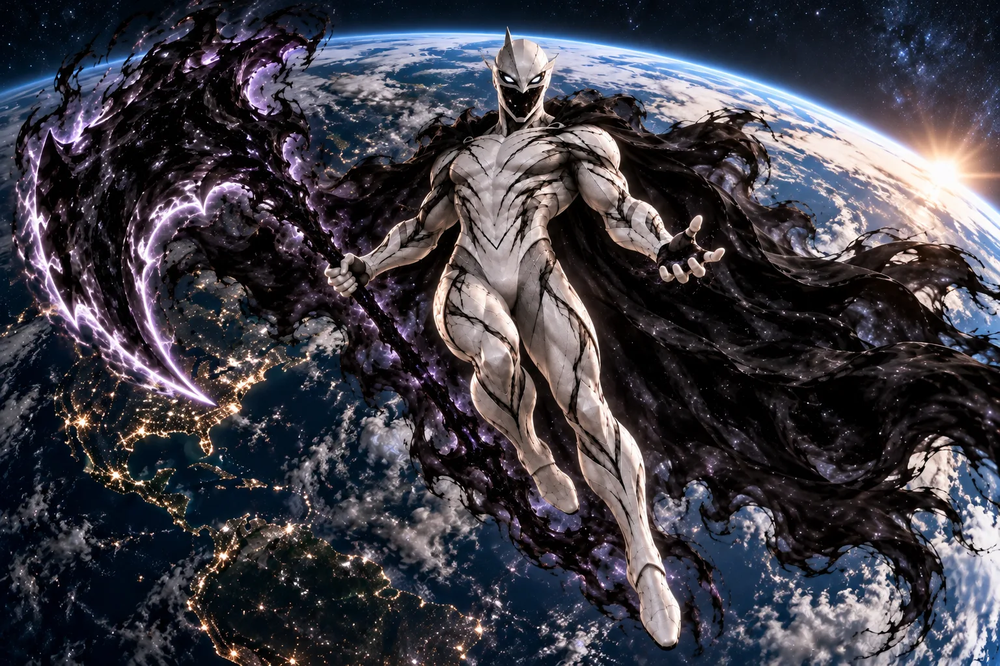
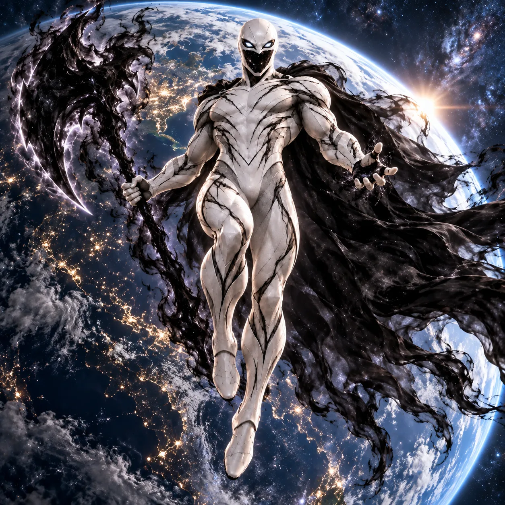

¿Qué diferencia a este universo del principal?
Universo principal · 001
En el universo principal, Yutani, el mayor genio de la tierra engaña parcialmente a los Invasores X y encuentran su complejo principal, llevando a todos los héroes de la tierra allí y tras la primera mejora que los Invasores X le aplicaron Yutani rompió el control mental y con su ayuda mataron a los Sobreranos desmantelando los cerebros de su imperio.
Universo 1102
Los soberanos convirtieron en conquistador al héroe de la tierra Blackrain, el cual bajo el control absoluto de los soberanos conquistaba todo planeta con el que se topara, independientemente de sus defensas, pues, dado su poder, pues sus habilidades se maximizaron y aprendieron habilidades nuevas.
Historia
Tras la inmensa humillación que la tierra les dió a los Invasores X venciéndolos en repetidas ocasiones, los Invasores X exigieron a la tierra que otorgara a su más poderoso héroe, el que los venció tantas veces; Blackrain pero, a diferencia del universo principal, en este universo al enviar la tierra al resto de héroes, Blackrain ayuda a los Invasores X derrotando y matando a los héroes de la tierra.
Tras esto, los Invasores X conquistaron la tierra para asegurarse de que no se vengarían de ninguna forma, entonces, mandaron a su nuevo campeón, Blackrain, al cual enviaron a eliminar a todos los héroes de la tierra y junto a un ejército asignado por ellos conquistaron la tierra poniendo bajo su merced a toda la humanidad y sin Yutani y Blackrain la humanidad poco podía hacer para defenderse o revelarse ante su imperio, por lo que la tierra no volvió a hacer nada que no se le ordenara por sus nuevos gobernantes.
Nuevos límites por explorar

Trás la sumisión de la tierra, los Invasores X querían probar el poder de su nuevo campeón, por lo que lo enviaron a conquistar directamente a otros imperios, como los imperios: Steron, AracnoSephus y Vorlak, imperios a los cuales destruyeron completamente y los sumieron en la miseria absoluta, al ver el grandioso poder que su nuevo campeón tiene decidieron que debían de expandir su imperio a mayores rangos, pues, ahora, no tenían por qué temer a ningún rival, pues era imposible que cualquier imperio, grupo o planeta se les resistiese.
Para confirmar sus sospechas, los Invasores X decidieron meterse con el grupo al contra el que tanto temían medirse; la Unión de Planetas Independientes, contra ellos, los Invasores X empezaron a conquistar los planetas más débiles que formaban parte de la Unión, pero, se toparon con un rival digno, pues la Unión poseía una cantidad muy superior de números de soldados respecto a sus anteriores enemigos, por lo que los Invasores X tuvieron que enfrentarse a todos esos soldados con sus tropas, pero, Blackrain era una baza muy importante en esa guerra, pues, diezmaba las fuerzas enemigas tanto en el campo de batalla como en el espacio exterior, por lo que sus sospechas se confirmaban, no había nadie que pudiese ser rival para él. Espera, ningún rival...
El único rival existente
Despues de superar y asimilar a los otros imperios y de vencer a la Unión de Planetas Independientes, los Invasores X se toparon con un rival que con el que no se podía jugar, un rival que no hacía rehenes, el imperio Ultramita, ¿Qué hacer contra un ejército en el que cada soldado es literalmente un dios? Contra este imperio los Invasores X lo tenían mucho más difícil, pues Blackrain apenas podía eliminar a uno solo de los integrantes de esta poderosa especie enfrentar a varios a la vez sería una sentencia de muerte total ante su gran campeón.
El aislamiento no vuelve pacífica a la sociedad. Los ultramitas continúan compitiendo entre ellos, y los enfrentamientos por prestigio o rango pueden tener consecuencias brutales. Cleimus intenta canalizar esa agresividad hacia pruebas de resistencia y combates controlados, aunque muchos ven esas restricciones como otro límite impuesto a su naturaleza guerrera.
Los partidarios de la expansión

Entre los guerreros surge una corriente que considera Ultra Prime una prisión construida por su propio emperador. Creen que su fuerza les da derecho a explorar, conquistar y decidir qué mundos merecen resistirse. Algunos reclaman que se permita viajar a pequeños grupos; otros están dispuestos a desafiar a Cleimus para cambiar el destino de toda la especie.
Sus adversarios no son necesariamente pacifistas. Muchos veteranos apoyan el aislamiento porque temen que una guerra interminable divida a los ultramitas y desgaste el poder conseguido en su mundo natal. La discusión no enfrenta a débiles y fuertes, sino a distintas ideas sobre lo que significa demostrar superioridad.
Una galaxia que desconoce su amenaza
Fuera de Ultra Prime, numerosas civilizaciones mantienen sus propias disputas y alianzas sin haber conocido una campaña de conquista ultramita. Los gobernantes concentran sus esfuerzos en amenazas cercanas, sin imaginar la magnitud del poder que permanece inmóvil en aquel planeta.
El aislamiento convierte a los ultramitas en una fuerza difícil de comprender. Algunos relatos los describen como un pueblo de guerreros casi invencibles; otros los consideran un mito nacido de expediciones que nunca regresaron. El emperador no muestra interés en aclarar esas historias, porque su prioridad es conservar el orden dentro de sus fronteras.
La tensión que amenaza el trono
Cleimus ha evitado una expansión galáctica, pero todavía debe responder a una pregunta que nadie se atreve a plantearle directamente: ¿qué ocurrirá cuando un guerrero tan fuerte como él decida que Ultra Prime ya no es suficiente? El emperador refuerza la lealtad de sus consejeros, mientras sus rivales buscan aliados entre los soldados descontentos.
El destino de este universo se concentra en un solo mundo. Una nueva victoria de Cleimus podría prolongar el aislamiento; una derrota bastaría para abrir las puertas de una civilización cuyo poder nadie en la galaxia está preparado para medir.